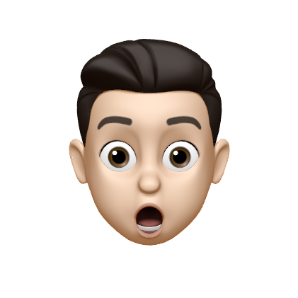
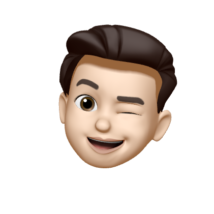
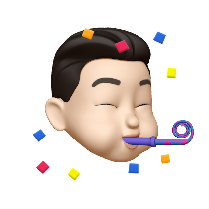
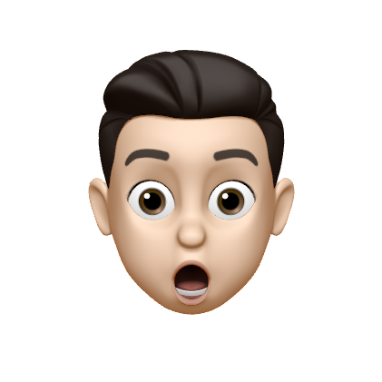
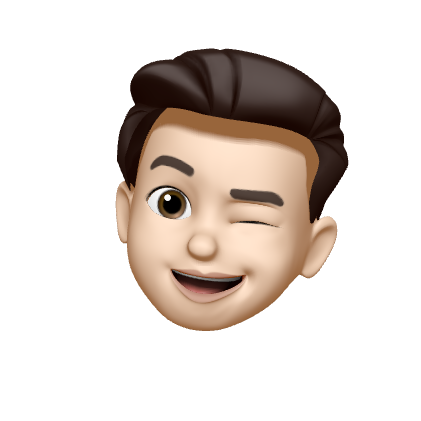
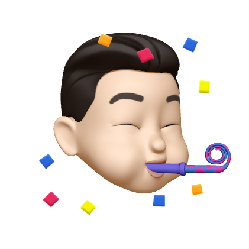

Hey there! I'm a second year computer science student at the University of Birmingham currently
looking for a summer internship. I've long enjoyed developing my own small projects; now, I'd like
to take that experience, and my computer science education to a professional level.
To that end, you can download my CV here.
When I'm not bashing away at the keyboard, I have several other interests to keep me occupied:
tennis, photography, and listening to music.
On top of that, I have a blog where I share my thoughts
and discuss my interests.
This year, I'm the publicity rep for the University of Birmingham's
Computer Science Society.
That involves working on the website, creating graphics and promoting events!
You can find me on social media using the links above. If you want to get in touch, you
can send me an email, or just message me directly.
George is a second year computer science student at the University of Birmingham currently
looking for a summer internship. To find out more about his skills and achievements, you can
download his CV here.
This year, he's enjoyed working on the committee of the University's
Computer Science Society as publicity rep.
In his personal life, George enjoys playing tennis, photography, and listening to music.
George has his own blog where he writes about his
thoughts and interests.
If you want to get in touch with George, you can send him an
email, or a DM.
 




